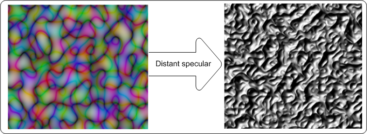
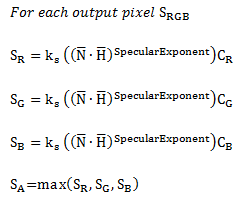
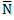
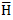
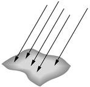
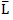
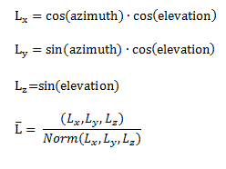

title: Distant-specular lighting effect description: Use the distant-specular lighting effect to create an image that appears to be a reflective surface where the light source appears to be coming from a long distance (like the sun or overhead lights). ms.assetid: 74D71A2D-8D1D-4FDE-898A-2D2F5A8D5D31 keywords:
Use the distant-specular lighting effect to create an image that appears to be a reflective surface where the light source appears to be coming from a long distance (like the sun or overhead lights). This effect uses the alpha channel as a height map and lights the image with a distant light source.
The color of the output bitmap is a result of light color, light position, and the surface geometry. The alpha channel output for each pixel with specular lighting is the maximum of the red, green, and blue channel outputs for that pixel.
The CLSID for this effect is CLSID_D2D1DistantSpecular.
The example here shows the input and output images of the distant-specular lighting effect.

The final output bitmap can be calculated using the following equations.

where k? = specular lighting constant.
= surface normal unit vector.
= "halfway" unit vector between eye unit vector and light unit vector.
Cr, Cg, Cb = the light color in RGB components.
The image here shows an example of the direction of light from a distant light source.

The effect uses the azimuth and elevation parameters to calculate the light vector  using the following equations:

where Light?, Lighty, and Lightz are the input light position values.
| Display name and index enumeration | Description |
|---|---|
| Azimuth D2D1_DISTANTSPECULAR_PROP_AZIMUTH | The direction angle of the light source in the XY plane relative to the X-axis in the counter clock wise direction. The units are in degrees and must be between 0 and 360 degrees. The type is FLOAT. The default value is 0.0f. |
| Elevation D2D1_DISTANTSPECULAR_PROP_ELEVATION | The direction angle of the light source in the YZ plane relative to the Y-axis in the counter clock wise direction. The units are in degrees and must be between 0 and 360 degrees. The type is FLOAT. The default value is 0.0f. |
| SpecularExponent D2D1_DISTANTSPECULAR_PROP_SPECULAR_EXPONENT | The exponent for the specular term in the Phong lighting equation. A larger value corresponds to a more reflective surface. The value is unitless and must be between 1.0 and 128. The type is FLOAT. The default value is 1.0f. |
| SpecularConstant D2D1_DISTANTSPECULAR_PROP_SPECULAR_CONSTANT | The ratio of specular reflection to the incoming light. The value is unitless and must be between 0 and 10,000. The type is FLOAT. The default value is 1.0f. |
| SurfaceScale D2D1_DISTANTSPECULAR_PROP_SURFACE_SCALE | The scale factor in the Z direction. The value is unitless and must be between 0 and 10,000. The type is FLOAT. The default value is 1.0f. |
| Color D2D1_DISTANTSPECULAR_PROP_COLOR | The color of the incoming light. This property is exposed as a D2D1_VECTOR_3F (R, G, B) and used to compute LR, LG, LB. The type is D2D1_VECTOR_3F. The default value is {1.0f, 1.0f, 1.0f}. |
| KernelUnitLength D2D1_DISTANTSPECULAR_PROP_KERNEL_UNIT_LENGTH | The size of an element in the Sobel kernel used to generate the surface normal in the X and Y direction. This property is a D2D1_VECTOR_2F (Kernel Unit Length X, Kernel Unit Length Y) and is defined in (device-independent pixels (DIPs)/Kernel Unit). The effect uses bilinear interpolation to scale the bitmap to match size of kernel elements. The type is D2D1_VECTOR_2F. The default value is {1.0f, 1.0f}. |
| ScaleMode D2D1_DISTANTSPECULAR_PROP_SCALE_MODE | The interpolation mode the effect uses to scale the image to the corresponding kernel unit length. There are six scale modes that range in quality and speed. The type is D2D1_DISTANTSPECULAR_SCALE_MODE. The default value is D2D1_DISTANTSPECULAR_SCALE_MODE_LINEAR. |
| Enumeration | Description |
|---|---|
| D2D1_DISTANTSPECULAR_SCALE_MODE_NEAREST_NEIGHBOR | Samples the nearest single point and uses that. This mode uses less processing time, but outputs the lowest quality image. |
| D2D1_DISTANTSPECULAR_SCALE_MODE_LINEAR | Uses a four point sample and linear interpolation. This mode outputs a higher quality image than nearest neighbor. |
| D2D1_DISTANTSPECULAR_SCALE_MODE_CUBIC | Uses a 16 sample cubic kernel for interpolation. This mode uses the most processing time, but outputs a higher quality image. |
| D2D1_DISTANTSPECULAR_SCALE_MODE_MULTI_SAMPLE_LINEAR | Uses 4 linear samples within a single pixel for good edge anti-aliasing. This mode is good for scaling down by small amounts on images with few pixels. |
| D2D1_DISTANTSPECULAR_SCALE_MODE_ANISOTROPIC | Uses anisotropic filtering to sample a pattern according to the transformed shape of the bitmap. |
| D2D1_DISTANTSPECULAR_SCALE_MODE_HIGH_QUALITY_CUBIC | Uses a variable size high quality cubic kernel to perform a pre-downscale the image if downscaling is involved in the transform matrix. Then uses the cubic interpolation mode for the final output. |
[!Note]
If you don't select a mode, the effect defaults to D2D1_DISTANTSPECULAR_SCALE_MODE_LINEAR.
| Requirement | Value |
|---|---|
| Minimum supported client | Windows 8 and Platform Update for Windows 7 [desktop apps | Windows Store apps] |
| Minimum supported server | Windows 8 and Platform Update for Windows 7 [desktop apps | Windows Store apps] |
| Header | d2d1effects.h |
| Library | d2d1.lib, dxguid.lib |